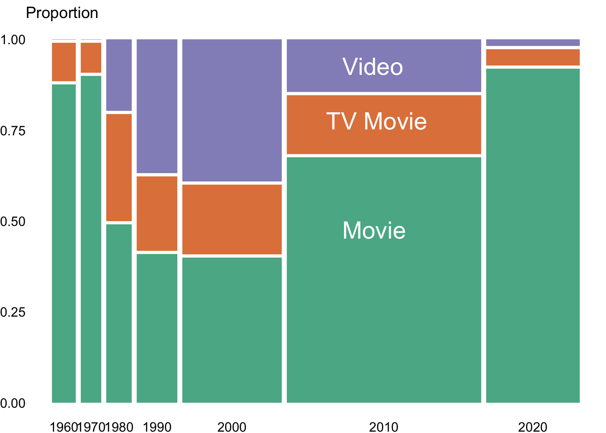
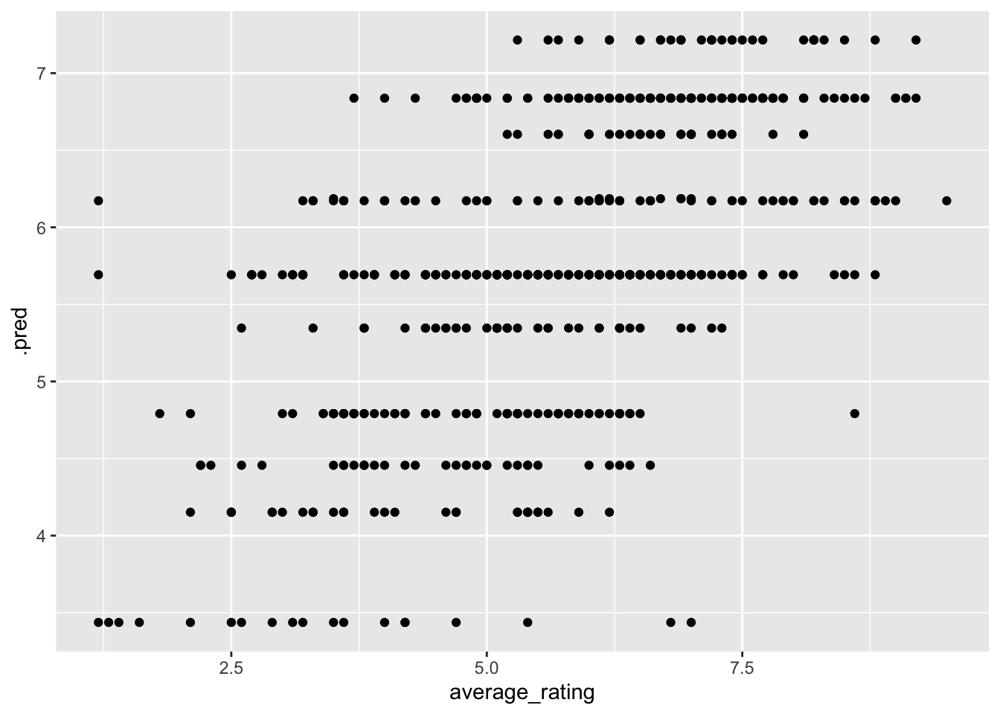

# install.packages("devtools")
# devtools::install_github("haleyjeppson/ggmosaic")
library(ggmosaic)
library(tidymodels)
library(rpart.plot)
library(tidyverse)Monster Movies
Dataset of videos with “monster” in the title
This week we’re exploring “monster” movies: movies with “monster” in their title. The data this week comes from the Internet Movie Database. Thank you to Jon Harmon for curating this week’s dataset.
Libraries
Data
This Tidytuesday dataset was curated by Jon Harmon and comes from IMD
monster_movie_genres <- readr::read_csv('https://raw.githubusercontent.com/rfordatascience/tidytuesday/master/data/2024/2024-10-29/monster_movie_genres.csv')
monster_movies <- readr::read_csv('https://raw.githubusercontent.com/rfordatascience/tidytuesday/master/data/2024/2024-10-29/monster_movies.csv') |>
separate_rows(genres, sep = ",") |>
mutate(value = 1) |>
pivot_wider(names_from = genres, values_from = value, values_fill = 0)Data Manipulation
Getting the data ready for plotting.
plot_data <- monster_movies |>
mutate(title_type = str_to_title(title_type)) |>
mutate(decade = (year %/% 10) * 10) |>
filter(decade >= 1960) |>
drop_na(title_type, decade) |>
count(title_type, decade)
plot_data |>
ggplot() +
geom_mosaic(aes(weight = n, x = product(decade),
fill = title_type)) +
theme_void() +
labs(title = "Proportions of Mediums With the Monster In The Title") +
theme(axis.text.x = element_text(),
axis.text.y = element_text(),
legend.position = "none") +
scale_y_continuous() +
annotate( "text",
x = .55, y = .5, label = "Movie",
color = "white", size = 7, vjust = 1, hjust = 0) +
annotate("text",
x = .52, y = .8, label = "TV Movie",
color = "white", size = 7, vjust = 1, hjust = 0) +
annotate( "text",
x = .55, y = .95, label = "Video",
color = "white", size = 7, vjust = 1, hjust = 0) +
scale_fill_brewer(palette = "Dark2")
We will now develop a predictive model to estimate IMDb ratings. The model will consider key factors such as the movie’s genres, the number of votes it received, and its release year. These variables are chosen for their potential influence on a movie’s rating and will form the foundation of our analysis.
monster_model <- monster_movies |>
select(primary_title, year, runtime_minutes, average_rating,
num_votes, Comedy:Music, Short:War)
movie_rec <- recipe(average_rating ~ .,
data = monster_model) |>
update_role(primary_title, new_role = "ID")
movie_mod_lm <- linear_reg() |>
set_engine(engine = "lm") |>
set_mode(mode = "regression")
movie_wflow_lm <- workflow() |>
add_model(movie_mod_lm) |>
add_recipe(movie_rec)
movie_wflow_lm |>
fit(data = monster_model) |>
tidy()# A tibble: 26 × 5
term estimate std.error statistic p.value
<chr> <dbl> <dbl> <dbl> <dbl>
1 (Intercept) 18.1 6.17 2.94 0.00343
2 year -0.00617 0.00308 -2.00 0.0459
3 runtime_minutes 0.00163 0.00261 0.625 0.532
4 num_votes 0.00000301 0.00000120 2.51 0.0125
5 Comedy 0.235 0.145 1.62 0.105
6 Horror -0.847 0.145 -5.84 0.00000000899
7 Mystery 0.250 0.266 0.942 0.347
8 Crime -0.274 0.256 -1.07 0.284
9 Drama 0.0309 0.176 0.176 0.861
10 Romance 0.130 0.444 0.294 0.769
# ℹ 16 more rowsNow we will plot.
# Fit the model and predict
movie_wflow_lm_fit <- movie_wflow_lm |>
fit(data = monster_model)
# Generate predictions
predictions <- movie_wflow_lm_fit |>
predict(new_data = monster_model) |>
bind_cols(monster_model) |>
mutate(residual = abs(average_rating - .pred)) # Calculate residuals (absolute error)
# Create the plot with color based on the residuals
ggplot(predictions, aes(x = average_rating, y = .pred, color = residual)) +
geom_point() +
geom_abline(intercept = 0, slope = 1) + # Add the identity line
scale_color_gradient(low = "blue", high = "red") + # Blue for close, red for far
theme_minimal() +
labs(
x = "Actual Rating",
y = "Predicted Rating",
title = "Actual Rating vs. Predicted Rating",
color = "Deviation from Line"
)
Graphical tree format for the predictive tree, illustrating how different variables affect our predictions for ratings.
movie_mod_cart <- decision_tree() |>
set_engine(engine = "rpart") |>
set_mode(mode = "regression")
movie_wflow_cart <- workflow() |>
add_model(movie_mod_cart) |>
add_recipe(movie_rec)
movies_tree <- movie_wflow_cart |>
fit(data = monster_model) |>
extract_fit_parsnip()
rpart.plot(movies_tree$fit)